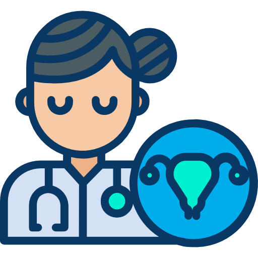

Our Services
Our Services


Gynecologist
Specialized in the diseases of women & girls particulary of their female repreductive system.
Learn moreDentist
Specializes related to disgnosing and treating complex dental , oral and facial issues.
Learn more